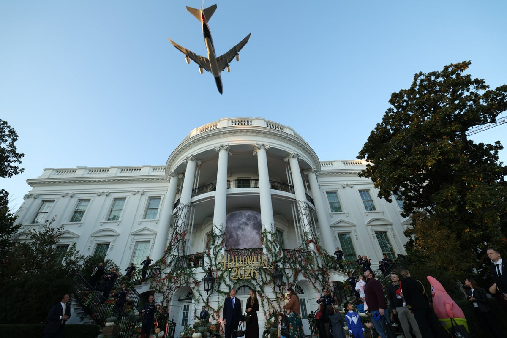

백악관 위로 대통령 전용기 저공 비행
야외 행사장 상공 122m 접근 ‘화들짝’
백악관 “어린이 위한 환상적 비행” 자평
사전 통보 못받은 워싱턴DC ‘불쾌감’

악관은 “어린이들을 위한 환상적인 에어포스원 비행”이라고 밝혔다.
워싱턴DC 시 의회는 엑스에 “워싱턴 도심과 펜타곤(국방부 청사), 공항에 있는 사람들은 저공비행이 있기 불과 15분 전에야 통보받았다”라며 “우리 시의회 당국자들을 포함해 많은 사람이 놀랐다”고 밝혔다. 미군은 오후 5시 23분께야 워싱턴DC 도심 상공에 항공기 비행이 있을 예정이라고 공지했다.
로이터 통신에 따르면 미국 연방항공청(FAA)은 안전을 위해 백악관에서 직선으로 4마일(약 6.4㎞)가량 떨어진 로널드 레이건 공항의 항공기 운항을 일시 중단했으며, 이로 인해 202편의 이·착륙이 지연됐다.
WP가 확보한 관제탑 녹음본에는 오후 5시 49분쯤 한 조종사가 “저 비행기는 몇 번이나 더 저공비행을 하는 겁니까?”라고 묻자 관제사가 “이번이 마지막이기를 바랍니다”라고 답하는 음성이 담겼다.
체계가 왜저래